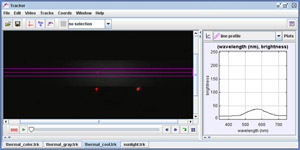

This is the spectrum of a 60W "soft white" incandescent lamp with HeNe red (633nm) and green (543 nm) laser spots for calibration. The lamp is being operated at a reduced voltage and is significantly dimmer. Is there also a shift in the peak wavelength?
